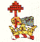
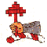
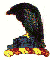
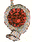
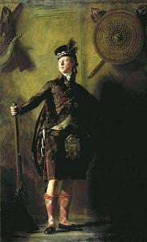
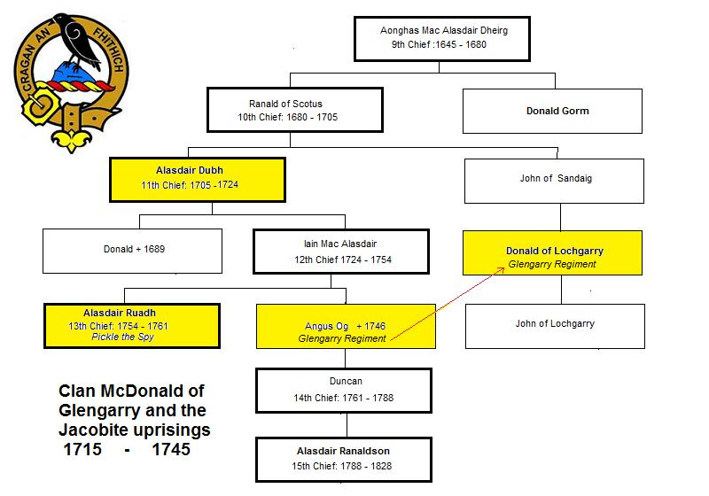
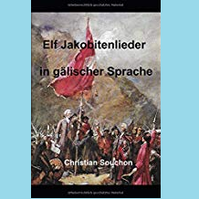

Alasdair à Gleanna Garadh
Alexander of Glengarry
Dirge by Sileas McDonald of Keppoch c. 1721 [1]
Tune - Mélodie"Alasdair of Glengarry" (pentatonic)
Same tune as The Battle of Falkirk
(The Gaelic singers, for instance Carol Galbraith (Nic à Bhreatannaich), sing this poem to that tune)
Sequenced by Christian Souchon





|
ALASDAIR OF GLENGARRY 1. Alasdair of Glengarry [2], you have caused me to shed tears today. Small wonder that I am covered with wounds and that they are repeatedly being burst open; small wonder that I am filled with deep sighing, seeing all the misfortune that befell my friends. Death is constantly cutting off from us the best of the tallest oaks. 2. We lost, almost at the same time, Sir Donald [3], his son and his brother. What use is it for us to complain over them? Clanranald [4] fell from us on the battlefield. We have lost a strong grey oak-tree which sheltered our friends, a wood-grouse from the pine-wood, a blue-eyed hawk, vigorous and strong. 3. You were the leader in wisdom and counsel in every activity where responsibility was concerned; bright, pleasant and handsome face, heart generous and liberal with money. You were the choice of excellent warriors, a shoulder to support us, as you were worthy to be; a courageous, manly and effective lion, a leader whom James Stuart [5] has lost. 4. If you were in the same situation as Donald was when he put the boat to sea, you would never have come home without knowing why he launched it. When you were seen on the strand, left alone in the lurch our hearts fell into sorrow. The outcome is clear: you were not long-lived. [6] 5. You were a red torch to burn them, you would cleave them to the heels, you were a hero for waging battle, you were a champion whose arm never flinched. You were the salmon in fresh water, the eagle in the highest flock, you were the lion above all beasts, you were the stout antlered stag. 6. You were an undrainable loch, you were the liberal fount of health; you were Ben Nevis above every moor, you were an unescalatable crag. You were the top-stone of the castle, you were the broad flag of the street, you were a priceless gem, you were the jewel in the ring. 7. You were the yew above every forest, you were the strong steadfast oak, you were the holly and the black-thorn, the apple-tree, rough-barked and many-flowered. You had no kinship with the aspen, owed no bonds to the alder; there was none of the lime-tree in you; you were the darling of beautiful women. 8. You were the husband of an invaluable wife, and it grieves me that she is now without you: though it is not the same for me as for her, I have myself suffered a bitter fortune. Let every wife who is without a husband pray to have the Son of God in his place, for He it is who can aid her in every sorrow which afflicts her. 9. I pray that your soul may be saved, now that you have been buried in the clay. I pray for happiness for those you have left, in your home and in your lands. May I see your son [7] in your place, in wealth and responsibility. Alasdair of Glengarry, you have caused me to shed tears today. |
ALASDAIR A GLEANNA GARADH 1.Alasdair à Gleanna Garadh, [2] Thug thu n-diugh gal air mo shùilibh; S beag ioghnadh mi bhith fo chreuchdaibh S gur tric gan reubadh às ùr iad; S beag ioghnadh mi bhith trom-osnach, S meud an dosgaidh th air mo chàirdibh; Gur tric an t-eug uainn a gearradh Rogha nan darag as àirde. 2.Chaill sinn ionann agus còmhla Sir Dòmhnall [3] s a mhac s a bhràthair; Ciod e n stà dhuinn bhith gan gearan? Thuit Mac Mhic Ailein [4] sa bhlàr uainn; Chaill sinn darag làidir liath-ghlas A chumadh dìon air ar càirdean, Capall-coille bhàrr na giùthsaich, Seabhag sùil-ghorm lùthmhor làidir. 3.Bu tu ceann air cèill s air comhairl Anns gach gnothach am biodh cùram, Aghaidh shoilleir sholta thlachdmhor, Cridhe fial farsaing mun chùinneadh; Bu tu roghainn nan sàr-ghaisgeach, Ar guala thaice, s tu b fhiùghail; Leòmhann smiorail fearail feumail, Ceann-feachda chaill Seumas Stiùbhart. [5] 4.Nam b ionann duitse s do Dhòmhnall, An uair a chuir e n long air muir, Cha tigeadh tu dhachaigh gu bràth Gun fhios dè m fàth às n do chuir; Nuair a chunnacas air an tràigh sibh A bhith gur fàgail air faondradh, Thuit ar cridheachan fo mhulad: S lèir a bhuil - cha robh sibh saoghlach. [6] 5.Bu tu n lasair dhearg gan losgadh, Bu tu sgoltadh iad gu n sàiltibh, Bu tu curaidh cur a chatha, Bu tu n laoch gun athadh làimhe; Bu tu m bradan anns an fhìor-uisg, Fìreun air an eunlaith s àirde, Bu tu n leòmhann thar gach beathach, Bu tu damh leathann na cràice. 6.Bu tu n loch nach fhaodte thaomadh, Bu tu tobar faoilidh na slàinte, Bu tu Beinn Nibheis thar gach aonach, Bu tu chreag nach fhaodte theàrnadh; Bu tu clach-uachdair a chaisteil, Bu tu leac leathann na sràide, Bu tu leug lòghmhor nam buadhan, Bu tu clach uasal an fhàinne. 7.Bu tu n t-iubhar thar gach coillidh, Bu tu n darach daingeann làidir, Bu tu n cuileann s bu tu n draigheann, Bu tu n t-abhall molach blàthmhor; Cha robh do dhàimh ris a chritheann No do dhligheadh ris an fheàrna; Cha robh bheag ionnad den leamhan; Bu tu leannan nam ban àlainn. 8.Bu tu cèile na mnà prìseil, S oil leam fhèin da dìth an dràst thu; Ged nach ionann domhsa s dhise, S goirt a fhuair mise mo chàradh; H-uile bean a bhios gun chèile, Guidheadh i Mac Dè na àite, O s E s urra bhith ga còmhnadh Anns gach bròn a chuireas càs oirr. 9.Guidheam t anam a bhith sàbhailt On a chàireadh anns an ùir thu; Guidheam sonas air na dhfhàg thu Ann ad àros s ann ad dhùthaich: Gum faic mi do mhac [7] ad àite Ann an saidhbhreas s ann an cùram: Alasdair à Gleanna Garadh, Thug thu n-diugh gal air mo shùilibh |
ALEXANDRE DE GLENGARRY 1. Combien ai-je versé de larmes, Alexandre de Glengarry [2], Sur ta mort! Mon cur et mon âme Demeurent à jamais meurtris. Je soupire - qui s'en étonne ? - Sur le sort de tous mes amis: Et la mort mêle, monotone. Les plus beaux chênes aux chablis. 2. En si peu de temps nous perdîmes Sir Donald [3], son frère et son fils. - Les plaindre serait inutile - Clanranald [4], mort à l'ennemi. Et voilà le grand chêne à terre Où tant des nôtres s'abritaient. Beau comme le coq de bruyère, L'il perçant comme l'épervier. 3. Nul ne t'égalait en sagesse, Nul n'était de si bon conseil; Toujours aimable ta noblesse, Et ton dévouement sans pareil. Le meilleurs des hommes de guerre, Digne d'être notre champion; Lion hardi, quelle perte amère, Pour Jacques Stuart [5] et la nation. 4. Si Donald l'eût fait, toi, sans doute, Lorsqu'"il" gagna l'embarcation, Tu n'aurais pas repris ta route Sans lui demander ses raisons. Quand nous te vîmes sur la grève, Tout seul, plongé dans l'embarras Nous nous sentîmes mal à l'aise: Longtemps, tu n'y survivrais pas. [6] 5. Tu fus de l'incendie la torche, Et la chaîne pour entraver, Vaillant combattant de l'Ecosse, Ton bras jamais n'a succombé. Pareil au saumon dans l'eau vive, Pareil à l'aigle dans les cieux, A ces lions que nul ne captive, Ou bien à ces cerfs majestueux. 6. Et tu fus le lac insondable, La fontaine qui coule à flots; Ben Nevis surplombant la lande, Ou l'inaccessible plateau. Tu fus la haute citadelle, L'étendard dont s'orne la voie, Le noir diamant dont l'étincelle Sur une bague d'or flamboie. 7. Semblable à l'if dans la futaie, Au grand chêne triomphateur, Au houx, à l'arbre aux rouges baies, Au pommier rugueux, mais en fleurs. Tu n'avais, certes, rien d'un tremble, Ni d'un aulne, ni d'un tilleul; Aucun d'entre eux ne te ressemble; Et tu fus un bourreau des curs. 8. Epoux d'une femme admirable, Dont je partage le chagrin, Puisque son destin lamentable, Depuis bien longtemps est le mien. Que l'épouse devenue veuve Vers Jésus Christ tourne les yeux. La seule aide dans son épreuve C'est bien celle du Fils de Dieu. 9. C'est pour le salut de ton âme, Que je prie, car ton corps n'est plus. Je prie pour tes enfants, ta femme, Et pour tous ceux qui t'ont perdu. Puissé-je voir, portant tes armes En digne successeur, ton fils [7]. Combien ai-je versé de larmes, Alexandre de Glengarry!
(Trad. Ch.Souchon (c) 2004) |
|
[1] Sileas Nic Dhomnail na Ceapaich (Silis McDonald of Keppoch) c.1660/c.1729: She was a daughter of Gilleasbaig (Archibald), chief of the McDonnald of Keppoch. She married around 1685 Alexander Gordon of Camdell. Some time after they 1700 moved to Beldorney near Huntly. They had a large family from whom were descended the Gordons of Beldorney, Wardhouse and Kildrummy. Very likely, she did not begin to compose until she reached middle age. She is most notable for the 23 poems she wrote (or are ascribed to her) in the Gaelic language. Her work covers a rather scarce period in the history of Gaelic verse, between Iain Lom and the great 18th century century poets. As referred to in verse 8 of the present "dirge" (funeral song), she lost her husband and her daughter in little more than a week, in 1720. She experienced a religious conversion to Catholicism after a period of illness (verse 8). Her strong Jacobite sympathies are evident, since all the people mentioned in the present panegyric poem are prominent Jacobites. This dirge figures among the highest achievements of Gaelic verse [2] Alasdair Dubh (the Darkhaired), son of the 10th Glengarry Chief Ranald of Scotas, was the 11th Chief of the McDonalds of Glengarry from 1705 till 1721. He had fought at the Battle of Killiecrankie in 1689, at the head of a large battalion, where he was seen mowing down two men at every stroke of his broadsword, whilst his uncle Donald Gorm performed heroic deeds when attacked by an overwhelmingly number of red-coat soldiers, until at last he fell. Glengarry himself reluctantly took the oath of allegiance to William III in 1691 and his Successor Queen Anne. His name appears among the signatures to the loyal address of the Highland chiefs presented by the Earl of Mar to the new King, George I, when he landed at Greenwich in 1714. But the king turned his back on Mar, who fled and called the great meeting of the chiefs which became known as the "Hunting of Mar". Alasdair Dubh took part in the 1715 rebellion on the Jacobite side. He attended the pretended Hunting Party at Breamar and fought with 800 men at Sherrifmuir (1715). For this his had his house burnt down and was so much impoverished that he had to let his woods to an English company for iron smelting. He was not with his clansmen at the battle of Glenshiel in 1719. He was afterwards appointed a trustee for managing the Chevalier's affairs in Scotland and he died in 1724. He is also quoted in the song 'The Chevalier's Musterroll'.
Donald of Lochgarry: His brother, founder of the line of Lochgarry, John McDonald of Sandaig was succeeded by his son, Donald, born about 1680. "My curse on any of my race who puts foot again on British soil; and my double on him who submits to the Guelph; and my deadliest curse on him who may try to regain Lochgarry!" John became a colonel in the British Army and remained in possession of Lochgarry where he built a house that burned in 1746. From now on he was pursued by ghostly manifestations and was forced to return to France where he died childless in 1790. All descendants of John's brother refused to risk the curse -and the estate with the house were sold-, except Arthur Antony, 7th Chief of Lochgarry, a renowned professor of oriental languages at Oxford, who spent the night in the old house in 1920. He heard knocking of non-existent doors, ringing of non-existent bells, etc... during that night, and left the place before dawn. His nephew, the present Lochgarry, a Canadian citizen, did not as yet express the wish to try out the efficiency of the curse. [3] Sir Donald McDonald 4th Baronet of Sleat was an ardent Jacobite whose father had fought at Killiecrankie. He was one of those summoned by the Lord Advocate, on the breaking out of the rebellion of 1715, to appear at Edinburgh, under pain of a year's imprisonment to give bail allegiance to the government. After the suppression of the rebellion, he proceeded to the Isle of Skye with about 1000 men. He retired into one of the Uists, where he remained till he obtained a ship to carry him to France. He was forfeited for his share in the insurrection, but the forfeiture was soon removed. He died in 1718 leaving a son and four daughters. His son kept aside from the 1745 uprising. [4] Alan Dearg McDonald of ClanRanald led the right wing of the Jacobite Army at Sheriffmuir where he fell in 1715. He seems to have foreseen it, since, when he left his residence of Castle Tioram, he ordered it to be set on fire watching it burning from a near hilltop. [5] James Stuart, the Old Pretender. [6] You were not long-lived: this elegy can be dated in 1721 or 1723. This obscure stanza is explained by Sorley McLean in his "Silis of Keppoch - Ris a' Bhruthaich" (1985): I would suggest that it refers to the Pretender's sailing back to France in December 1715...It is possible there is a kind of double entendre in the image of the ship going out and coming in, one literal and the other figurative. If this is so, it is all the more likely that the verse refers to the Old Pretender's coming from France and sailing back, having accomplished nothing.
[7] John, Dark Alexander's son (Iain Mac Alasdair Dudh) by his second wife Lady Mary McKenzie, succeeded his father in the chiefship. |
 Henry Raeburn's portrait of Alasdair Ronaldson of Glengarry (1771 - 1828) in 1812, a grand-grand-greatson of Alasdair Dubh and 15th chief of Clan Glengarry. He was the "Fergus McIvor" in Sir Walter Scott's novel Waverley
|
[1] Sileas Nic Dhomnail na Ceapaich (Silis McDonald of Keppoch) c.1660 - c.1729: C'était la fille de Gilleasbaig (Archibald), chef du clan McDonald de Keppoch. Elle épousa vers 1685 Alexandre Gordon de Camdell. Quelque temps après 1700 ils s'installèrent à Beldorney près de Huntly et fondèrent une nombreuse famille dont sont issus les Gordon de Beldorney, Wardhouse et Kildrummy. Il est vraisemblable qu'elle ne commença pas à écrire avant d'avoir atteint la cinquantaine. Elle est surtout connue pour les 23 poèmes qu'elle écrivit en gaélique (ou qui lui sont attribués). Son uvre fait le lien, à une époque assez pauvre en productions dans cette langue, entre Iain Lom et les grands poètes du 18ème siècle. Comme cela est évoqué à la strophe 8 du présent "dirge" (chant funèbre), elle perdit son mari et sa fille en moins d'une semaine, en 1720. Elle se convertit au catholicisme après une longue maladie (strophe 8). Ses profondes sympathies Jacobites expliquent que tous les personnages cités dans le présent panégyrique soient des membres éminents de ce mouvement. Ce poème figure parmi les chefs d'uvre de la poésie gaélique. [2] Alasdair Dubh (le Brun), fils du 10ème chef, Ranald de Scotas, fut le 11ème Chef des Glengarry de 1705 à 1721. Il avait pris part à la bataille de Killiecrankie en 1689 à la tête d'un grand bataillon, où on l'a voyait abattre deux hommes à chaque coup de son broadsword, tandis que son oncle, Donald Gorm accomplissait des exploits héroïques contre les habits rouges bien supérieurs en nombre avant de mourir épuisé. Quant à Glengarry, c'est de mauvaise grâce qu'il prêta serment d'allégeance à Guillaume III en 1691, puis à la reine Anne, son successeur. Son nom apparaît cependant parmi les ceux des chefs signataires de la déclaration de loyauté transmise par le Comte de Mar au nouveau roi George I à son arrivée à Greenwich. Mais comme le roi bientôt lui tourna le dos, Mar s'enfuit et convoqua le grand rassemblement des chefs désormais connu comme la "partie de chasse de Mar". Alasdair Dubh prit part à la rébellion de 1715 au côté des Jacobites et combattit à Killiecrankie ainsi qu'à Sherrifmuir (1715). Ce pourquoi on brûla sa maison et il fut appauvri au point de devoir louer ses forêts à une compagnie anglaise qui fabriquait de la fonte. Il ne suivit pas les hommes de son clan à la bataille de Glenshiel en 1719. Plus tard il fut chargé de défendre les intérêts du Chevalier de Saint-Georges en Ecosse et il mourut en 1724. Il est cité dans le chant 'Le rôle d'équipage du Chevalier'.
Donald de Lochgarry: Son frère, fondateur de la lignée de Lochgarry, John McDonald de Sandaig, eut comme successeur son fils, Donald, né vers 1680. "Maudit soit quiconque de ma race qui remettra jamais le pied sur le sol britannique; doublement maudit soit celui qui se soumettra au Guelfe; et malédiction mortelle à celui qui tentera de récupérer Lochgarry!" John devint colonel de l'armée britannique et repris possession de Lochgarry où il construisit une maison qui brûla en 1746. Dès lors, il fut poursuivi par des manifestations fantomatiques et fut contraint de retourner en France où il mourut sans enfant en 1790. Tous les descendants du frère de John veillèrent à ne pas encourir la malédiction -le domaine et la maison furent vendus-, à l'exception d'Arthur Antony, 7ème Chef des Lochgarry, illustre professeur de langues orientales à Oxford, qui passa la nuit dans la vielle maison en 1920. Il entendit des coups frappés à des portes et le tintement de cloches qui n'existaient pas, etc... toute la nuit durant, et il quitta la place avant l'aube. Son neveu, l'actuel Chef des Lochgarry, citoyen canadien, n'a pas encore exprimé le vu de tester l'efficacité de cette malédiction. [3] Sir Donald McDonald 4ème baronnet de Sleat fut un ardent Jacobite dont le père avait combattu à Killiecrankie. Il fut de ceux qui furent sommés par le "Lord Avocat", lorsqu'éclata la rébellion de 1715, de comparaître à Edimbourg, sauf à subir une peine d'un an de prison, pour faire allégeance au gouvernement. Après la répression de la rébellion, il se rendit à l'Ile de Skye avec environ 1000 hommes. Il se retira sur l'une des Iles d'Uist, jusqu'à ce qu'un bateau le conduise en France. Il fut déchu de ses droits et de ses biens en raison de sa participation à l'insurrection mais il fut rapidement amnistié. Il mourut en 1718 laissant un fils et quatre filles. Son fils resta à l'écart du soulèvement de 1745. [4] Alan Dearg McDonald de ClanRanald commandait l'aile droite de l'Armée Jacobite à Sherrifmuir où il mourut en 1715. Il semble avoir prévu cette fin tragique, car en quittant son château de Tioram, il y fit mettre le feu et observa l'incendie du haut d'une colline proche. [5] James Stuart, le Vieux Prétendant. [6] Longtemps tu n'y survivrais pas: on peut dater cette élégie de 1721 ou de 1723. Cette strophe énigmatique est interprétée comme suit par Sorley McLean dans son ouvrage "Silis of Keppoch - Ris a' Bhruthaich" (1985): "Je suggère qu'elle a trait à l'aller-retour entre la France et l'Ecosse que fit le Prétendant en décembre 1715...Il se peut qu'il y ait une sorte de double sens dans l'image de ce bateau qui part et qui revient, un sens propre et un sens figuré, ce qui ne ferait que renforcer l'hypothèse qu'il s'agit bien du Vieux Prétendant qui vient puis s'en retourne sans avoir rien fait.
[7] John fils d'Alexandre de Glengarry (Iain Mac Alasdair Dubh) né de sa seconde femme, Lady Mary McKenzie, succéda à son père comme chef du clan en 1724. |

| Click to know more about CLAN DONALD |
des chants étudiés dans ELF JAKOBITENLIEDER IN GÄLISCHER SPRACHE un essai en allemand au format LIVRE DE POCHE  de Christian Souchon |
zu der Abhandlung ELF JAKOBITENLIEDER IN GÄLISCHER SPRACHE einem deutschsprachigen TASCHENBUCH von Christian Souchon |
is one of the songs studied in ELF JAKOBITENLIEDER IN GÄLISCHER SPRACHE presented in German as a PAPERBACK BOOK by Christian Souchon |
Cliquer sur le lien ou l'image - Klicke auf den Link oder auf das Bild - Click link or picture for more info